# Install required package(s)
pkgs <- c("faraway", "investr", "mgcv", "performance", "pscl")
lib <- installed.packages()[, "Package"]
install.packages(setdiff(pkgs, lib))# Y ~ Poisson(lambda = 0.5)
set.seed(2004) # for reproducibility
par(mfrow = c(2, 2))
for (lambda in c(0.5, 2, 5, 15)) {
y <- dpois(0:35, lambda = lambda)
barplot(y, xlab = "y", ylab = "P(Y = y)", names = 0:35, main = paste("E(Y) =", lambda),
col = "dodgerblue2", border = "dodgerblue2", las = 1)
}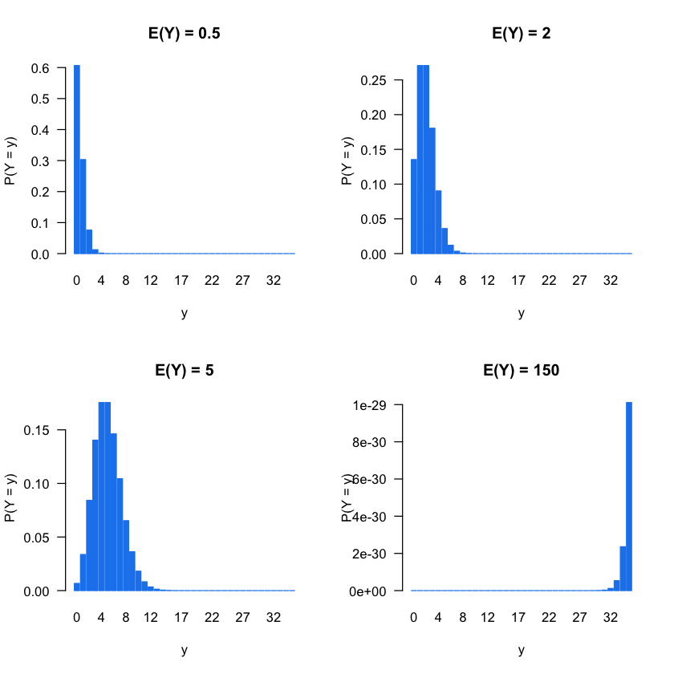
y <- rpois(10000, lambda = 200)
hist(y, 50)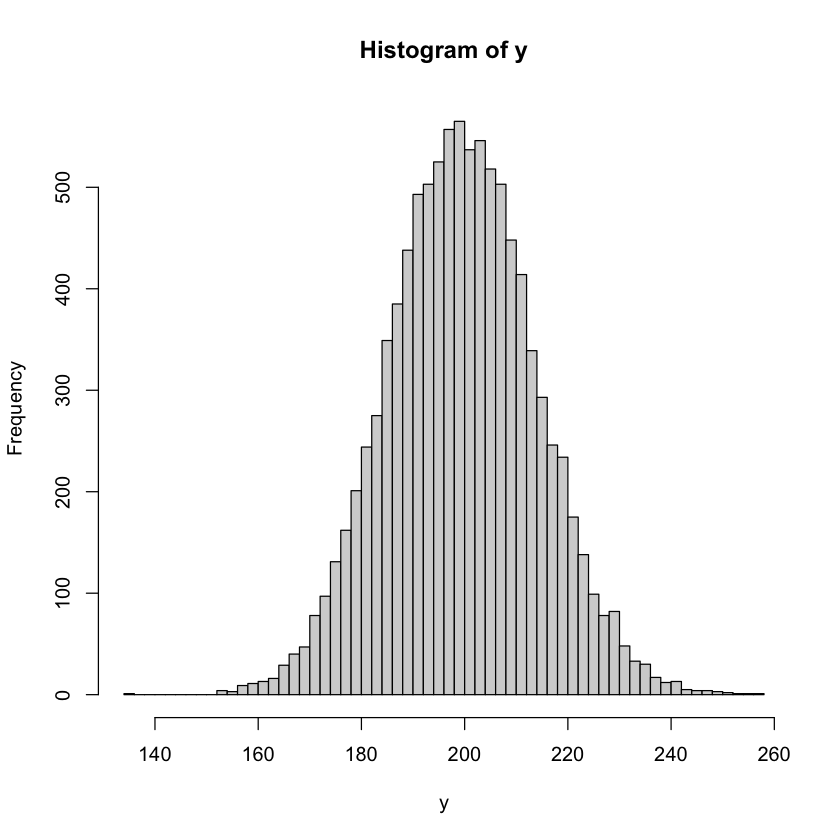
# Read about the Galapagos Islands species diversity data set
?faraway::gala# Load the Galapagos Islands data
data(gala, package = "faraway")
# Print structure of data frame
str(gala)'data.frame': 30 obs. of 7 variables:
$ Species : num 58 31 3 25 2 18 24 10 8 2 ...
$ Endemics : num 23 21 3 9 1 11 0 7 4 2 ...
$ Area : num 25.09 1.24 0.21 0.1 0.05 ...
$ Elevation: num 346 109 114 46 77 119 93 168 71 112 ...
$ Nearest : num 0.6 0.6 2.8 1.9 1.9 8 6 34.1 0.4 2.6 ...
$ Scruz : num 0.6 26.3 58.7 47.4 1.9 ...
$ Adjacent : num 1.84 572.33 0.78 0.18 903.82 ...gala$Endemics <- NULL # remove the second variable# Print a summary of the data
summary(gala) Species Area Elevation Nearest
Min. : 2.00 Min. : 0.010 Min. : 25.00 Min. : 0.20
1st Qu.: 13.00 1st Qu.: 0.258 1st Qu.: 97.75 1st Qu.: 0.80
Median : 42.00 Median : 2.590 Median : 192.00 Median : 3.05
Mean : 85.23 Mean : 261.709 Mean : 368.03 Mean :10.06
3rd Qu.: 96.00 3rd Qu.: 59.237 3rd Qu.: 435.25 3rd Qu.:10.03
Max. :444.00 Max. :4669.320 Max. :1707.00 Max. :47.40
Scruz Adjacent
Min. : 0.00 Min. : 0.03
1st Qu.: 11.03 1st Qu.: 0.52
Median : 46.65 Median : 2.59
Mean : 56.98 Mean : 261.10
3rd Qu.: 81.08 3rd Qu.: 59.24
Max. :290.20 Max. :4669.32 # This is a relatively small data set, so a scatterplot matrix could be useful
pairs(gala)pairs(gala, log = "xy")Warning message in xy.coords(x, y, xlabel, ylabel, log):
“1 y value <= 0 omitted from logarithmic plot”
Warning message in xy.coords(x, y, xlabel, ylabel, log):
“1 y value <= 0 omitted from logarithmic plot”
Warning message in xy.coords(x, y, xlabel, ylabel, log):
“1 y value <= 0 omitted from logarithmic plot”
Warning message in xy.coords(x, y, xlabel, ylabel, log):
“1 y value <= 0 omitted from logarithmic plot”
Warning message in xy.coords(x, y, xlabel, ylabel, log):
“1 x value <= 0 omitted from logarithmic plot”
Warning message in xy.coords(x, y, xlabel, ylabel, log):
“1 x value <= 0 omitted from logarithmic plot”
Warning message in xy.coords(x, y, xlabel, ylabel, log):
“1 x value <= 0 omitted from logarithmic plot”
Warning message in xy.coords(x, y, xlabel, ylabel, log):
“1 x value <= 0 omitted from logarithmic plot”
Warning message in xy.coords(x, y, xlabel, ylabel, log):
“1 x value <= 0 omitted from logarithmic plot”
Warning message in xy.coords(x, y, xlabel, ylabel, log):
“1 y value <= 0 omitted from logarithmic plot”
Warning message in xy.coords(x, y, xlabel, ylabel, log):
“1 x value <= 0 omitted from logarithmic plot”
Warning message in xy.coords(x, y, xlabel, ylabel, log):
“1 y value <= 0 omitted from logarithmic plot”
# Try taking logs...
pairs(~ log(Species) + log(Area) + log(Elevation) + log(Nearest) +
log(Scruz + 0.1) + log(Adjacent), data = gala)# Look at distribution of response
hist(gala$Species, breaks = nrow(gala), xlab = "Number of species",
col = "plum", border = "white")
#
#
# Is this enough to suggest a distirbution for modeling?
#
# https://github.com/bgreenwell/uc-bana7052-old/issues/6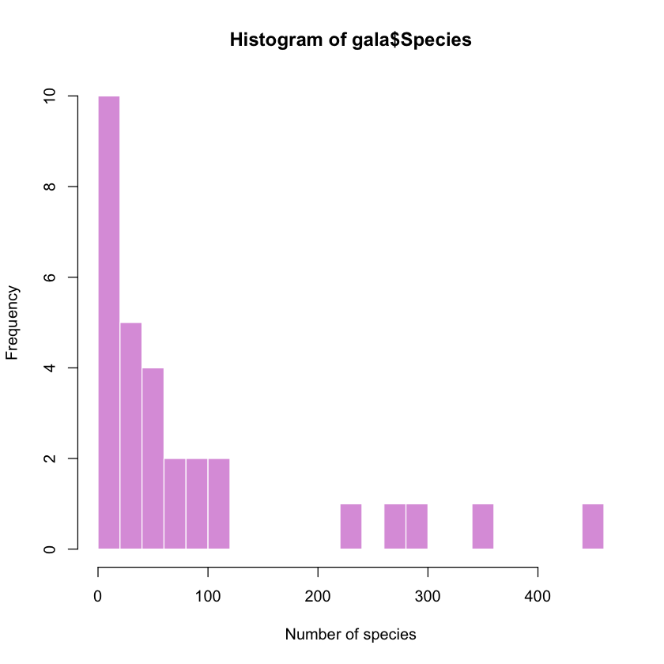
# Try OLS
gala.norm <- lm(log(Species) ~ log(Area) + log(Elevation) + log(Nearest) +
I(log(Scruz + 0.1)) + log(Adjacent), data = gala)
summary(gala.norm)
# Some basic residual plots
par(mfrow = c(2, 2))
plot(gala.norm, which = 1:4)
Call:
lm(formula = log(Species) ~ log(Area) + log(Elevation) + log(Nearest) +
I(log(Scruz + 0.1)) + log(Adjacent), data = gala)
Residuals:
Min 1Q Median 3Q Max
-1.4563 -0.5192 -0.1059 0.4632 1.3351
Coefficients:
Estimate Std. Error t value Pr(>|t|)
(Intercept) 5.10569 1.64880 3.097 0.00493 **
log(Area) 0.50350 0.09942 5.064 3.53e-05 ***
log(Elevation) -0.37384 0.32242 -1.159 0.25767
log(Nearest) -0.06564 0.11475 -0.572 0.57262
I(log(Scruz + 0.1)) -0.08255 0.09517 -0.867 0.39433
log(Adjacent) -0.02488 0.04596 -0.541 0.59327
---
Signif. codes: 0 ‘***’ 0.001 ‘**’ 0.01 ‘*’ 0.05 ‘.’ 0.1 ‘ ’ 1
Residual standard error: 0.7877 on 24 degrees of freedom
Multiple R-squared: 0.7899, Adjusted R-squared: 0.7461
F-statistic: 18.05 on 5 and 24 DF, p-value: 1.941e-07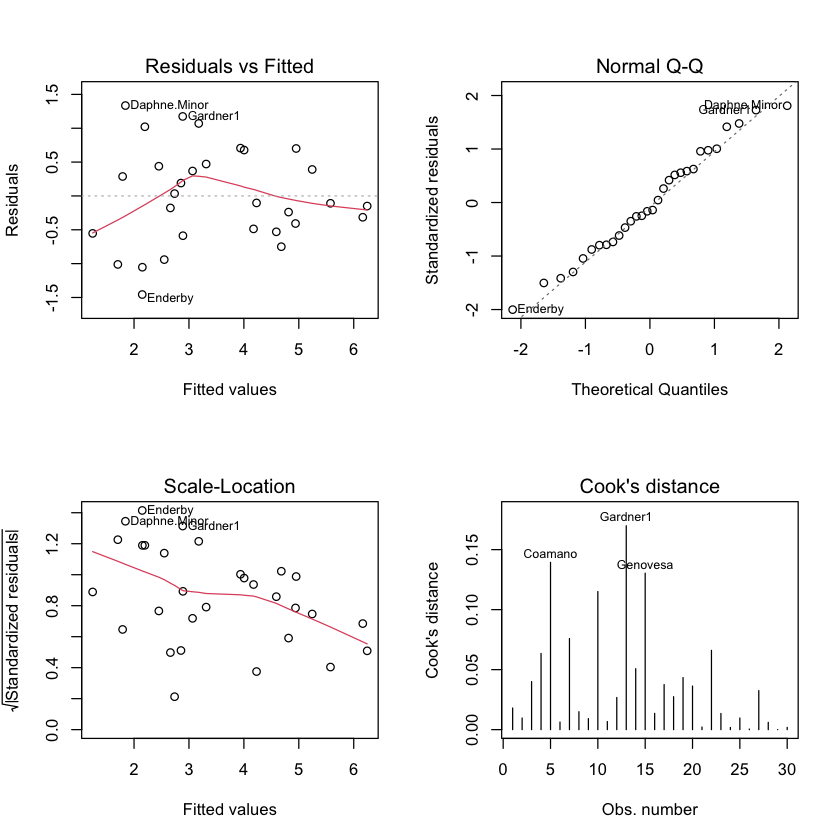
car::vif(gala.norm)- log(Area)
- 5.66151078721322
- log(Elevation)
- 5.61566326876307
- log(Nearest)
- 1.55476003192185
- I(log(Scruz + 0.1))
- 1.57238403979044
- log(Adjacent)
- 1.05523190766178
# A simple Poisson GLM assumes that Y ~ Poisson(mu), where E(Y) = mu and
#
# log(mu) = b0 + b1*x1 + b2*x2 + ... (i.e., the linear predictor).
#
# Note that 0 < mu < infinity, so the log transform/link makes sense.
# Fit a simple (additive) Poisson GLM to the data
gala.pois <- glm(Species ~ log(Area) + log(Elevation) + log(Nearest) +
I(log(Scruz + 0.1)) + log(Adjacent), family = poisson(link = "log"),
data = gala)
summary(gala.pois)
Call:
glm(formula = Species ~ log(Area) + log(Elevation) + log(Nearest) +
I(log(Scruz + 0.1)) + log(Adjacent), family = poisson(link = "log"),
data = gala)
Deviance Residuals:
Min 1Q Median 3Q Max
-5.4479 -2.6717 -0.4547 2.5613 8.2970
Coefficients:
Estimate Std. Error z value Pr(>|z|)
(Intercept) 3.287941 0.284661 11.550 < 2e-16 ***
log(Area) 0.348445 0.018029 19.327 < 2e-16 ***
log(Elevation) 0.036421 0.056983 0.639 0.52272
log(Nearest) -0.040644 0.013781 -2.949 0.00318 **
I(log(Scruz + 0.1)) -0.030045 0.010492 -2.864 0.00419 **
log(Adjacent) -0.089014 0.006948 -12.812 < 2e-16 ***
---
Signif. codes: 0 ‘***’ 0.001 ‘**’ 0.01 ‘*’ 0.05 ‘.’ 0.1 ‘ ’ 1
(Dispersion parameter for poisson family taken to be 1)
Null deviance: 3510.73 on 29 degrees of freedom
Residual deviance: 359.12 on 24 degrees of freedom
AIC: 531.96
Number of Fisher Scoring iterations: 5# Check for dispersion
performance::check_overdispersion(gala.pois)Overdispersion detected.
# Overdispersion test
dispersion ratio = 16.559
Pearson's Chi-Squared = 397.420
p-value = < 0.001
# Same as above, but doing it by hand
# Goodness of fit test (akin to the F test for linear regression)
(gof <- sum(residuals(gala.pois, type = "pearson") ^ 2)) # test statistic
pchisq(gof, df = df.residual(gala.pois), lower = FALSE) # p-value
397.420460059123
2.5416081573052e-69
# Check VIFs
car::vif(gala.pois)- log(Area)
- 5.804485309982
- log(Elevation)
- 5.98127389121554
- log(Nearest)
- 1.52201481509847
- I(log(Scruz + 0.1))
- 1.66491078411416
- log(Adjacent)
- 1.38825332890851
# Does the model fit the data well?
pred <- predict(gala.pois, type = "response")
plot(pred, gala$Species, xlab = "Predicted count", ylab = "Observed count")
abline(0, 1, lty = 2, col = "red3")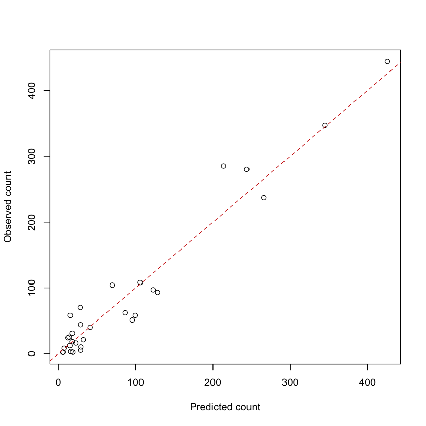
# Update model summary (i.e., standard errors with new dispersion parameter)
dp <- gof / df.residual(gala.pois)
print(dp)
summary(gala.pois, dispersion = dp)[1] 16.55919
Call:
glm(formula = Species ~ log(Area) + log(Elevation) + log(Nearest) +
I(log(Scruz + 0.1)) + log(Adjacent), family = poisson(link = "log"),
data = gala)
Deviance Residuals:
Min 1Q Median 3Q Max
-5.4479 -2.6717 -0.4547 2.5613 8.2970
Coefficients:
Estimate Std. Error z value Pr(>|z|)
(Intercept) 3.28794 1.15837 2.838 0.00453 **
log(Area) 0.34844 0.07337 4.749 2.04e-06 ***
log(Elevation) 0.03642 0.23188 0.157 0.87519
log(Nearest) -0.04064 0.05608 -0.725 0.46859
I(log(Scruz + 0.1)) -0.03005 0.04270 -0.704 0.48162
log(Adjacent) -0.08901 0.02827 -3.149 0.00164 **
---
Signif. codes: 0 ‘***’ 0.001 ‘**’ 0.01 ‘*’ 0.05 ‘.’ 0.1 ‘ ’ 1
(Dispersion parameter for poisson family taken to be 16.55919)
Null deviance: 3510.73 on 29 degrees of freedom
Residual deviance: 359.12 on 24 degrees of freedom
AIC: 531.96
Number of Fisher Scoring iterations: 5# Try using quasi-Poisson nmodel instead (equivalent to above, but more automatic)
gala.pois <- glm(Species ~ log(Area) + log(Elevation) + log(Nearest) +
I(log(Scruz + 0.1)) + log(Adjacent), family = quasipoisson(link = "log"),
data = gala)
summary(gala.pois)
Call:
glm(formula = Species ~ log(Area) + log(Elevation) + log(Nearest) +
I(log(Scruz + 0.1)) + log(Adjacent), family = quasipoisson(link = "log"),
data = gala)
Deviance Residuals:
Min 1Q Median 3Q Max
-5.4479 -2.6717 -0.4547 2.5613 8.2970
Coefficients:
Estimate Std. Error t value Pr(>|t|)
(Intercept) 3.28794 1.15837 2.838 0.00908 **
log(Area) 0.34844 0.07337 4.749 7.85e-05 ***
log(Elevation) 0.03642 0.23188 0.157 0.87650
log(Nearest) -0.04064 0.05608 -0.725 0.47559
I(log(Scruz + 0.1)) -0.03005 0.04270 -0.704 0.48839
log(Adjacent) -0.08901 0.02827 -3.149 0.00435 **
---
Signif. codes: 0 ‘***’ 0.001 ‘**’ 0.01 ‘*’ 0.05 ‘.’ 0.1 ‘ ’ 1
(Dispersion parameter for quasipoisson family taken to be 16.55919)
Null deviance: 3510.73 on 29 degrees of freedom
Residual deviance: 359.12 on 24 degrees of freedom
AIC: NA
Number of Fisher Scoring iterations: 5###############################################################################
#
# A simple Poisson regression epidemic model
#
################################################################################ Enter the data by hand and plot
cases <- c(12, 14, 33, 50, 67, 74, 123, 141, 165, 204, 253, 246, 240)
year <- 1:13 + 1980
plot(year, cases, xlab = "Year", ylab = "New AIDS cases", ylim = c(0, 280),
pch = 19, col = 1, las = 1)# Does it look like the number of new cases each year is growing unchecked?aids <- data.frame("cases" = cases, "year" = year)
summary(aids.pois1 <- glm(cases ~ year, data = aids, family = poisson(link = "log")))
investr::plotFit(aids.pois1, interval = "confidence", shade = TRUE)
Call:
glm(formula = cases ~ year, family = poisson(link = "log"), data = aids)
Deviance Residuals:
Min 1Q Median 3Q Max
-4.6784 -1.5013 -0.2636 2.1760 2.7306
Coefficients:
Estimate Std. Error z value Pr(>|z|)
(Intercept) -3.971e+02 1.546e+01 -25.68 <2e-16 ***
year 2.021e-01 7.771e-03 26.01 <2e-16 ***
---
Signif. codes: 0 ‘***’ 0.001 ‘**’ 0.01 ‘*’ 0.05 ‘.’ 0.1 ‘ ’ 1
(Dispersion parameter for poisson family taken to be 1)
Null deviance: 872.206 on 12 degrees of freedom
Residual deviance: 80.686 on 11 degrees of freedom
AIC: 166.37
Number of Fisher Scoring iterations: 4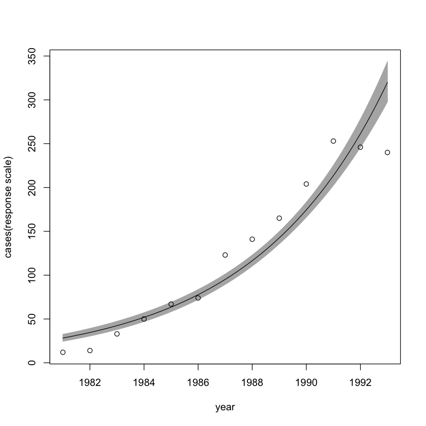
# Check residual plots (these will use the "deviance" residuals for a Poisson model)
par(mfrow = c(2, 2))
plot(aids.pois1, which = 1:4)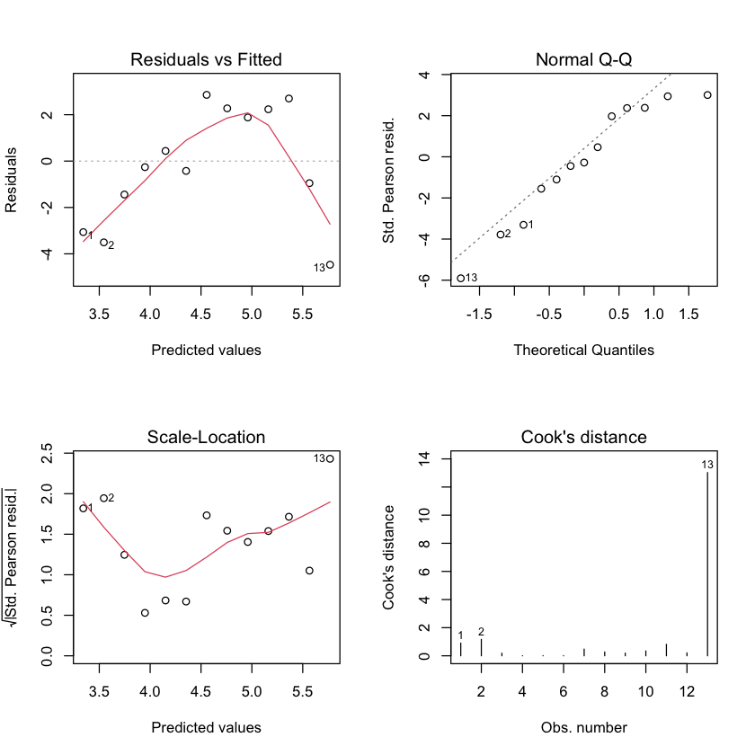
# Plot residual vs. year
palette("Okabe-Ito")
scatter.smooth(aids$year + 1980, residuals(aids.pois1, type = "deviance"), pch = 19,
xlab = "Year", ylab = "Deviance residual", lpars = list(col = 3))
abline(h = 0, lty = 2, col = 2)
palette("default")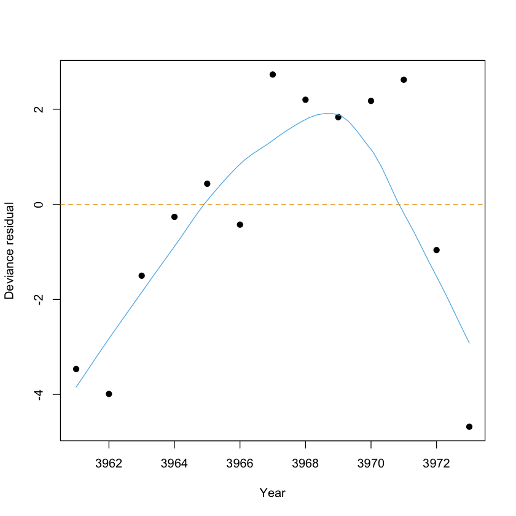
# Perhaps a quadratic trend would be better
aids.pois2 <- glm(cases ~ poly(year, degree = 2), data = aids, family = poisson(link = "log"))
summary(aids.pois2)
investr::plotFit(aids.pois2, interval = "confidence", shade = TRUE)
par(mfrow = c(2, 2))
plot(aids.pois2, which = 1:4)
Call:
glm(formula = cases ~ poly(year, degree = 2), family = poisson(link = "log"),
data = aids)
Deviance Residuals:
Min 1Q Median 3Q Max
-1.45903 -0.64491 0.08927 0.67117 1.54596
Coefficients:
Estimate Std. Error z value Pr(>|z|)
(Intercept) 4.44867 0.03803 116.964 < 2e-16 ***
poly(year, degree = 2)1 3.46922 0.15742 22.038 < 2e-16 ***
poly(year, degree = 2)2 -0.95511 0.11896 -8.029 9.82e-16 ***
---
Signif. codes: 0 ‘***’ 0.001 ‘**’ 0.01 ‘*’ 0.05 ‘.’ 0.1 ‘ ’ 1
(Dispersion parameter for poisson family taken to be 1)
Null deviance: 872.2058 on 12 degrees of freedom
Residual deviance: 9.2402 on 10 degrees of freedom
AIC: 96.924
Number of Fisher Scoring iterations: 4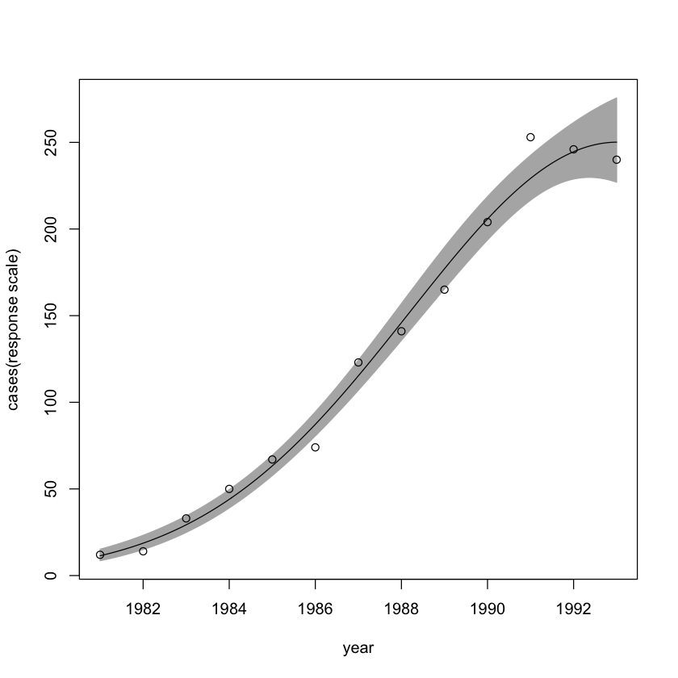
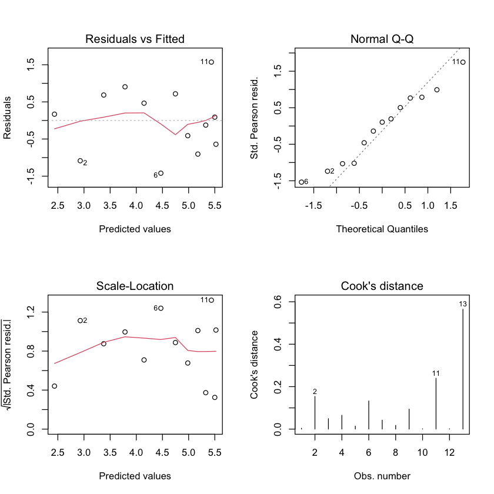
# Although the output from summary gives us the relevant p-value, we could test
# this more generally using our reduced-vs-full model framework
anova(aids.pois1, aids.pois2, test = "Chisq")#
# NOTE: The sample size here is incredibly small, so be suspicious of any inference...
#res <- resid(aids.pois2, type = "pearson")
plot(res, type = "l")# Try fitting a generalized additive model (GAM); in a GAM, you can specify
# nonparametric smooth functions of any of the predictors and not worry
# as much about finding a suitable transformation manually
library(mgcv)
# Fit a simple Poisson GAM using a smooth function of year
aids.pois3 <- gam(cases ~ s(year), data = aids, family = poisson(link = "log"))
summary(aids.pois3)
plot(aids.pois3, rug = TRUE)
Family: poisson
Link function: log
Formula:
cases ~ s(year)
Parametric coefficients:
Estimate Std. Error z value Pr(>|z|)
(Intercept) 4.4578 0.0381 117 <2e-16 ***
---
Signif. codes: 0 ‘***’ 0.001 ‘**’ 0.01 ‘*’ 0.05 ‘.’ 0.1 ‘ ’ 1
Approximate significance of smooth terms:
edf Ref.df Chi.sq p-value
s(year) 3.973 4.907 574.3 <2e-16 ***
---
Signif. codes: 0 ‘***’ 0.001 ‘**’ 0.01 ‘*’ 0.05 ‘.’ 0.1 ‘ ’ 1
R-sq.(adj) = 0.989 Deviance explained = 99.2%
UBRE = 0.30615 Scale est. = 1 n = 13###############################################################################
#
# Dealing with zero-inflated outcomes
#
################################################################################ The state wildlife biologists want to model how many fish are being caught by
# fishermen at a state park. Visitors are asked how long they stayed, how many
# people were in the group, were there children in the group, and how many fish
# were caught. Some visitors do not fish, but there is no data on whether a
# person fished or not. Some visitors who did fish did not catch any fish so
# there are excess zeros in the data because of the people that did not fish.
#
# Our sample consists of We have data on N=250 groups that went to a park. Each
# group was questioned about how many fish they caught (count), how many
# children were in the group (child), how many people were in the group
# (persons), and whether or not they brought a camper to the park (camper).
#
# The data can be read in as follows:
fish <- read.csv("https://stats.idre.ucla.edu/stat/data/fish.csv")# Retain only variables of interest and print summary
fish <- fish[, c("count", "child", "persons", "camper")]
summary(fish) count child persons camper
Min. : 0.000 Min. :0.000 Min. :1.000 Min. :0.000
1st Qu.: 0.000 1st Qu.:0.000 1st Qu.:2.000 1st Qu.:0.000
Median : 0.000 Median :0.000 Median :2.000 Median :1.000
Mean : 3.296 Mean :0.684 Mean :2.528 Mean :0.588
3rd Qu.: 2.000 3rd Qu.:1.000 3rd Qu.:4.000 3rd Qu.:1.000
Max. :149.000 Max. :3.000 Max. :4.000 Max. :1.000 # Scatterplot matrix
pairs(log(count + 0.1) ~ ., data = fish)# Simple Poisson model
fish.pois <- glm(count ~ ., data = fish, family = poisson(link = "log"))
summary(fish.pois)
barplot(table(fish$count))
Call:
glm(formula = count ~ ., family = poisson(link = "log"), data = fish)
Deviance Residuals:
Min 1Q Median 3Q Max
-6.8096 -1.4431 -0.9060 -0.0406 16.1417
Coefficients:
Estimate Std. Error z value Pr(>|z|)
(Intercept) -1.98183 0.15226 -13.02 <2e-16 ***
child -1.68996 0.08099 -20.87 <2e-16 ***
persons 1.09126 0.03926 27.80 <2e-16 ***
camper 0.93094 0.08909 10.45 <2e-16 ***
---
Signif. codes: 0 ‘***’ 0.001 ‘**’ 0.01 ‘*’ 0.05 ‘.’ 0.1 ‘ ’ 1
(Dispersion parameter for poisson family taken to be 1)
Null deviance: 2958.4 on 249 degrees of freedom
Residual deviance: 1337.1 on 246 degrees of freedom
AIC: 1682.1
Number of Fisher Scoring iterations: 6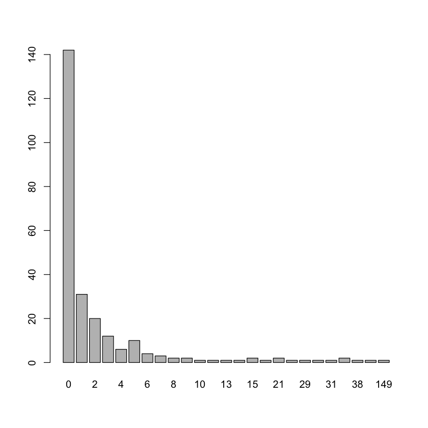
# Check for zero-inflation
performance::check_zeroinflation(fish.pois)Model is underfitting zeros (probable zero-inflation).
# Check for zero-inflation
Observed zeros: 142
Predicted zeros: 95
Ratio: 0.67
# In addition to predicting the number of fish caught, there is interest in
# predicting the existence of excess zeros (i.e., the zeroes that were not
# simply a result of bad luck or lack of fishing skill). In particular, we'd
# like to estimate the effect of party size on catching zero fish.
#
# We can accomplish this in several ways, but popular choices include
#
# 1) the zero-inflated Poisson (or negative binomial) model
# 2) the hurdle model
#
# In this example, we'll use a simple hurdle model, which essentially fits
# two seperate models:
#
# * P(Y = 0) via a logistic regression
# * P(Y = j), j > 0 via a truncated Poisson regression
#
# Below is a basic example that will help us answer the question(s) of interest
library(pscl)
summary(fish.hurdle <- hurdle(count ~ child + camper | persons, data = fish))
Call:
hurdle(formula = count ~ child + camper | persons, data = fish)
Pearson residuals:
Min 1Q Median 3Q Max
-0.8590 -0.7384 -0.6782 -0.1234 23.9679
Count model coefficients (truncated poisson with log link):
Estimate Std. Error z value Pr(>|z|)
(Intercept) 1.64668 0.08278 19.892 <2e-16 ***
child -0.75918 0.09004 -8.432 <2e-16 ***
camper 0.75166 0.09112 8.249 <2e-16 ***
Zero hurdle model coefficients (binomial with logit link):
Estimate Std. Error z value Pr(>|z|)
(Intercept) -0.7808 0.3240 -2.410 0.0160 *
persons 0.1993 0.1161 1.716 0.0862 .
---
Signif. codes: 0 '***' 0.001 '**' 0.01 '*' 0.05 '.' 0.1 ' ' 1
Number of iterations in BFGS optimization: 14
Log-likelihood: -1047 on 5 Df# Check the logit part manually
z <- fish
z$count <- ifelse(z$count == 0, 0, 1)
glm(count ~ persons, data = z, family = binomial)# Interpretation:
#
# * For every additional child the expected log number of the fish caught
# reduces by 0.759.
#
# * Being a camper increases the expected log number of fish caufght by 0.752.
#
# * For every additional person the log odds of catching zero fish increases by
# 0.199# Predict a new observation
nd <- data.frame("child" = 0, "persons" = 3, "camper" = 1)
predict(fish.hurdle, newdata = nd, type = "prob")# Try using a ZIP model instead
summary(fish.zip <- zeroinfl(count ~ child + camper | persons, data = fish))
Call:
zeroinfl(formula = count ~ child + camper | persons, data = fish)
Pearson residuals:
Min 1Q Median 3Q Max
-1.2369 -0.7540 -0.6080 -0.1921 24.0847
Count model coefficients (poisson with log link):
Estimate Std. Error z value Pr(>|z|)
(Intercept) 1.59789 0.08554 18.680 <2e-16 ***
child -1.04284 0.09999 -10.430 <2e-16 ***
camper 0.83402 0.09363 8.908 <2e-16 ***
Zero-inflation model coefficients (binomial with logit link):
Estimate Std. Error z value Pr(>|z|)
(Intercept) 1.2974 0.3739 3.470 0.000520 ***
persons -0.5643 0.1630 -3.463 0.000534 ***
---
Signif. codes: 0 '***' 0.001 '**' 0.01 '*' 0.05 '.' 0.1 ' ' 1
Number of iterations in BFGS optimization: 12
Log-likelihood: -1032 on 5 Df